all in 微信读书 8 个月之后，想分享这 6 个纯主观使用技巧
一、使用微信读书的原因
1️⃣ 个人阅读方式变化
全面拥抱电子书，绝大多数书籍会在阅读电子书之后再决定是否购买实体书
2️⃣ 几乎做到全端支持
安卓端和 iOS端都有 app 可供使用，针对平板也有专门的版本，支持同步
也可以使用网页版本的微信读书（ 在浏览器输入： https://weread.qq.com ，即可访问微信读书的网页版本 ）
网页版本的可用性越来越强，目前已支持部分 ai 功能和双栏阅读，如果想快速浏览某本书，网页版能很好地解决问题，特别是屏幕足够大的时候。
3️⃣ 支持导入多种格式的电子书

非付费会员有导入图书的上限，付费会员则无上限
4️⃣ ai 功能的逐步融入
ai 大纲：
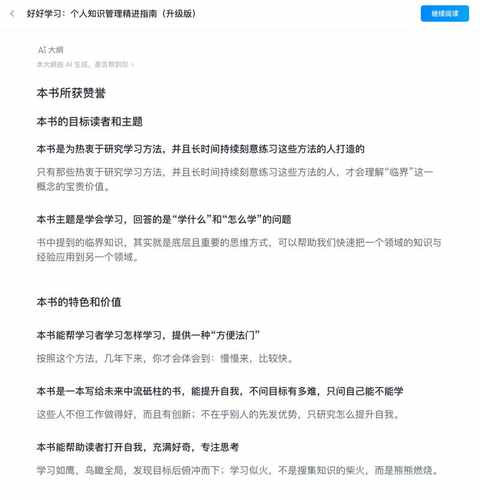
ai 问书：
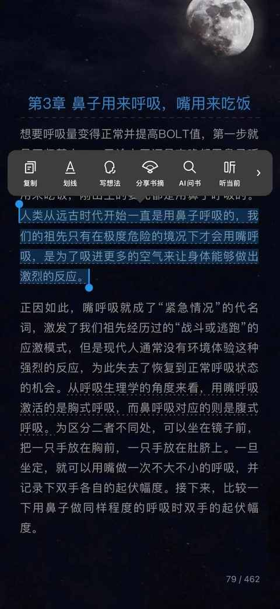
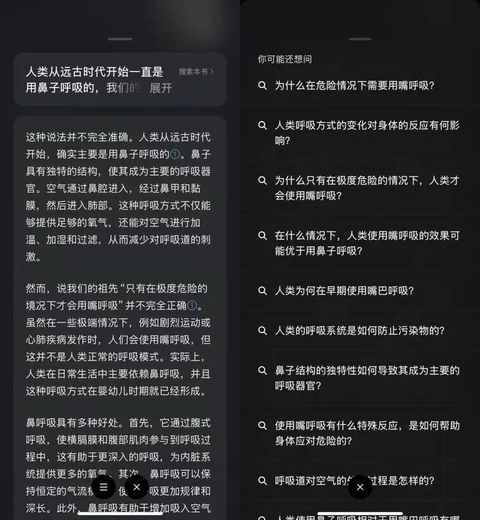
5️⃣ 不想看可以听
听书：
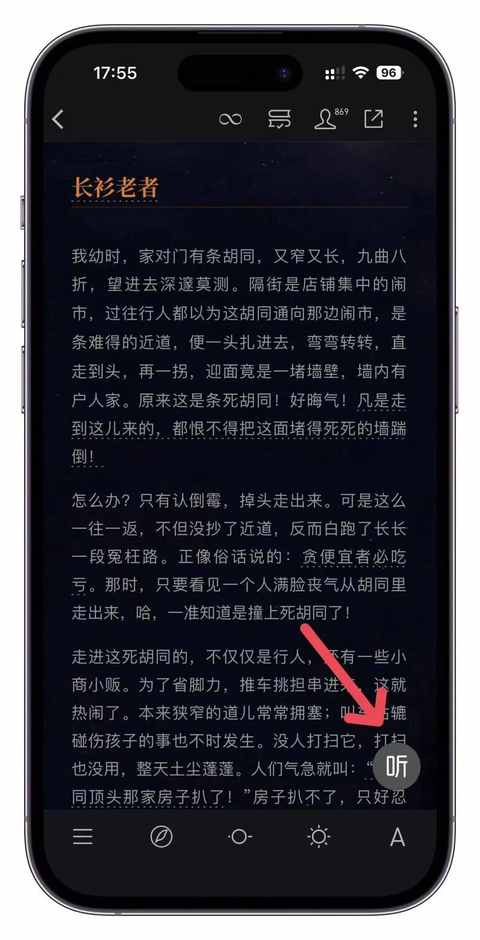
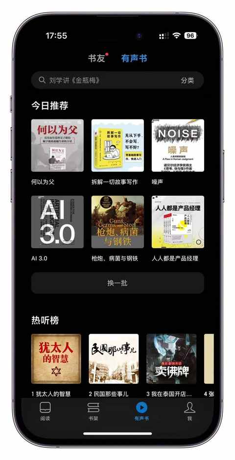
二、不得不提的 6 个纯主观使用技巧
1️⃣ 参与阅读打卡活动
能获取免费 VIP时长和赠币的各种阅读挑战赛：
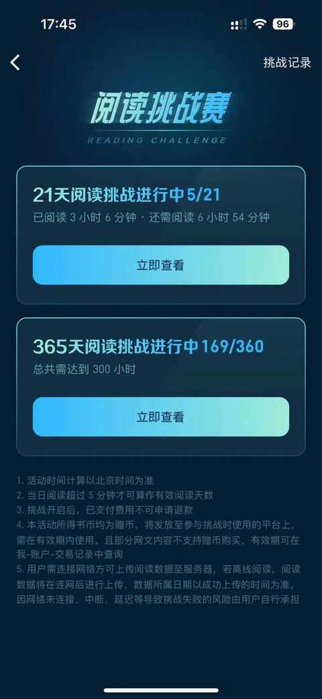
养成阅读习惯，每天阅读30-60分钟：
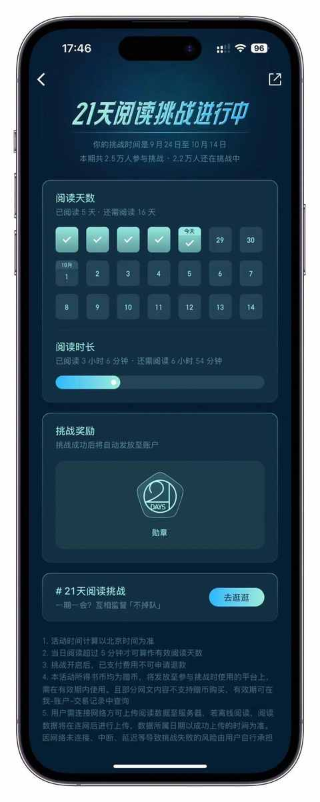
2️⃣ 宝藏的网页版
在当下愿意花费精力和时间去把网页版越做越完善的产品真的是太少了太少了。
最早的网页版本主要是用来导入图书的，要查看相关书籍必须用到各种客户端，现在网页版本已经支持： 书籍的分栏阅读、 便捷的笔记整理、ai 相关功能等等。
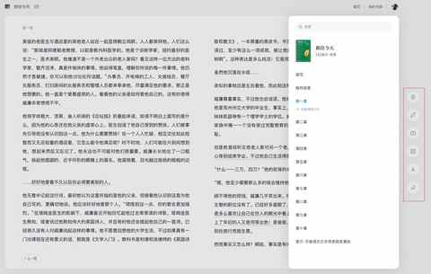
而且由于网页版功能的升级，在结合大屏幕的情况下，用网页版的微信读书特别适合针对一本或者基本书籍的速读。
3️⃣ 替身书架及其他隐私设置
无需担心其他人知道你在读什么
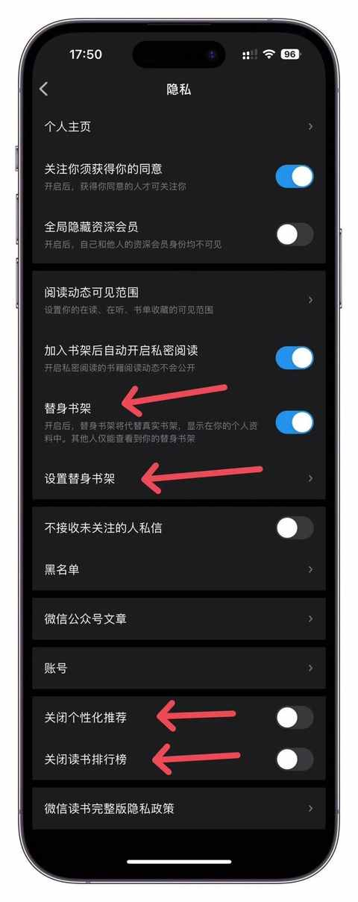
4️⃣ 管理公众号订阅 及订阅杂志
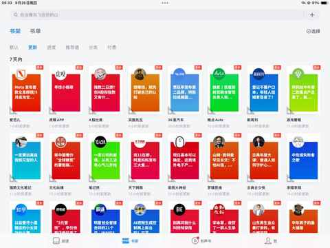
没有评论区，没有阅读量展示，能 更纯粹的去阅读文章
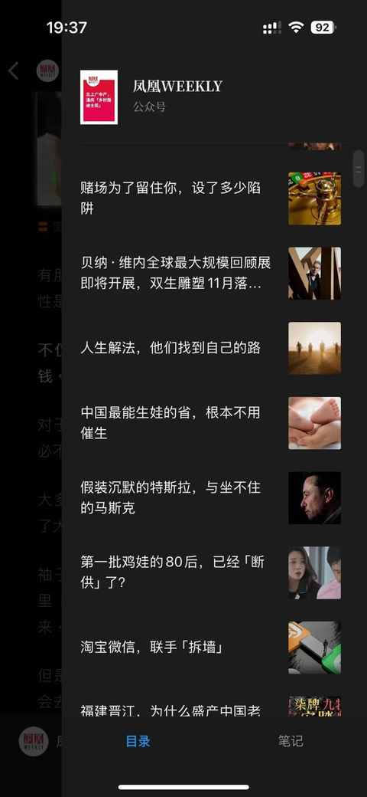
部分杂志也会在微信读书上架
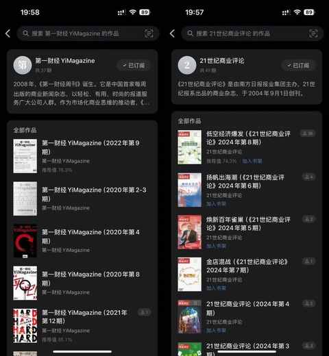
查看过期的杂志内容，也是一个比较好的可以回顾近几年各种大事小事的方式
5️⃣ 增量信息获取
从热门划线内容、评论区、延展阅读等等：
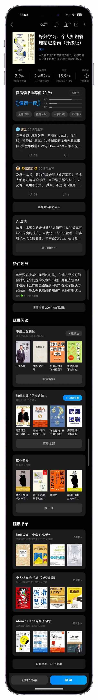
6️⃣ 把新书作为书单
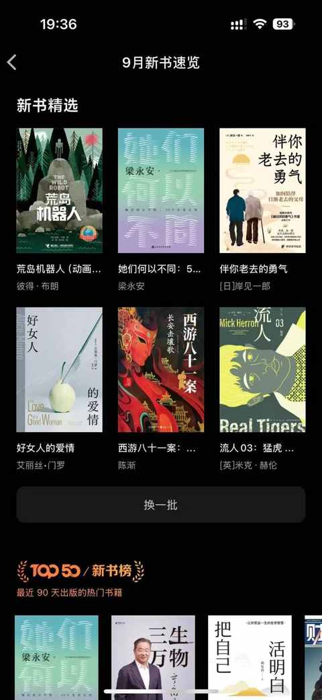
每月上架的新书不一定会看，但完全可以作为书单去作为阅读审美的参考